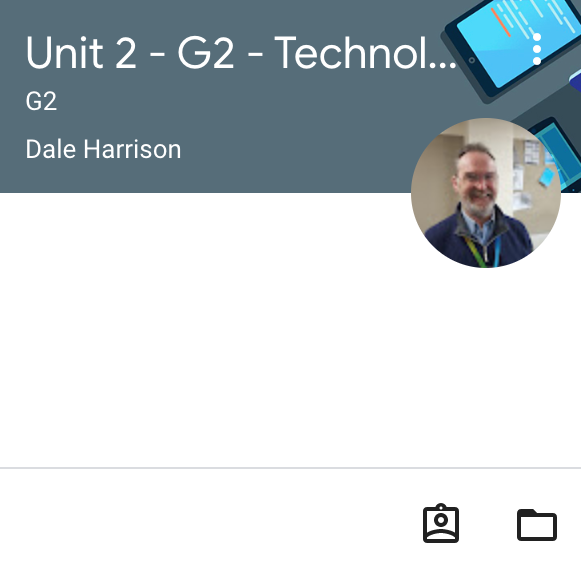

Within Technology Systems also known as Unit 2, we went through the basics of technology systems.
This included 8 bit binary, software and hardware, operating systems, flow charts, some coding such as strings, integers, booleans, automation and plenty more.
Within this unit there was another exam on everything we learnt, and personally I enjoyed the first unit more than this one.
No evidence of work for this assignment, it was an exam.